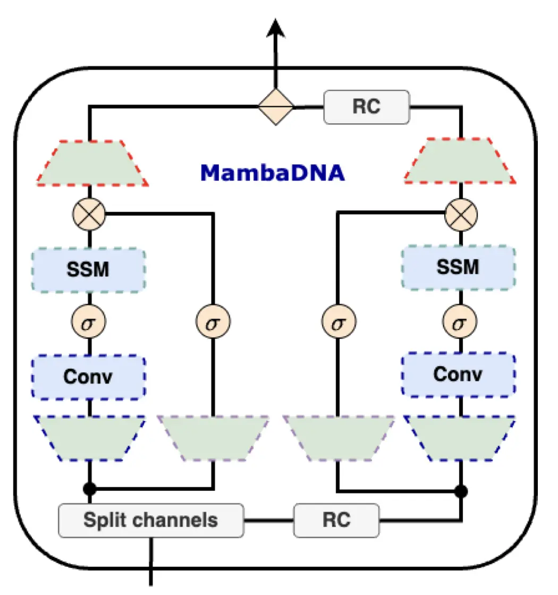
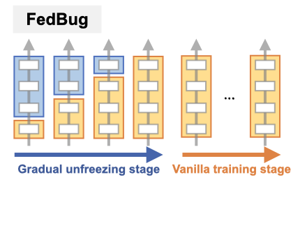

|
| CV | Github | Google Scholar | |
Hello, I'm a first-year Ph.D. student in Computer Science at Cornell, and I also hold a medical license in Taiwan.
|
{kind=link}
|
Cornell |
MIT-IBM |
National Yang Ming |
|---|
|
|  |
Large-scale sequence modeling has sparked rapid advances that now extend into biology and genomics. However, modeling genomic sequences introduces challenges such as the need to model long-range token interactions, the effects of upstream and downstream regions of the genome, and the reverse complementarity (RC) of DNA. Here, we propose an architecture motivated by these challenges that builds off the long-range Mamba block, and extends it to a BiMamba component that supports bi-directionality, and to a MambaDNA block that additionally supports RC equivariance. We use MambaDNA as the basis of Caduceus, the first family of RC equivariant bi-directional long-range DNA language models, and we introduce pre-training and fine-tuning strategies that yield Caduceus DNA foundation models. Caduceus outperforms previous long-range models on downstream benchmarks; on a challenging long-range variant effect prediction task, Caduceus exceeds the performance of 10x larger models that do not leverage bi-directionality or equivariance. |
|  |
Federated Learning (FL) offers a collaborative training framework, allowing multiple clients to contribute to a shared model without compromising data privacy. Due to the heterogeneous nature of local datasets, updated client models may overfit and diverge from one another, commonly known as the problem of client drift. In this paper, we propose FedBug (Federated Learning with Bottom-Up Gradual Unfreezing), a novel FL framework designed to effectively mitigate client drift. FedBug adaptively leverages the client model parameters, distributed by the server at each global round, as the reference points for cross-client alignment. Specifically, on the client side, FedBug begins by freezing the entire model, then gradually unfreezes the layers, from the input layer to the output layer. This bottom-up approach allows models to train the newly thawed layers to project data into a latent space, wherein the separating hyperplanes remain consistent across all clients. We theoretically analyze FedBug in a novel over-parameterization FL setup, revealing its superior convergence rate compared to FedAvg. Through comprehensive experiments, spanning various datasets, training conditions, and network architectures, we validate the efficacy of FedBug. Our contributions encompass a novel FL framework, theoretical analysis, and empirical validation, demonstrating the wide potential and applicability of FedBug. |

|
Model-agnostic meta-learning (MAML) is one of the most popular and widely-adopted meta-learning algorithms nowadays, which achieves remarkable success in various learning problems. Yet, with the unique design of nested inner-loop and outer-loop updates which respectively govern the task-specific and meta-model-centric learning, the underlying learning objective of MAML still remains implicit and thus impedes a more straightforward understanding of it. In this paper, we provide a new perspective to the working mechanism of MAML and discover that: MAML is analogous to a meta-learner using a supervised contrastive objective function, where the query features are pulled towards the support features of the same class and against those of different classes, in which such contrastiveness is experimentally verified via an analysis based on the cosine similarity. Moreover, our analysis reveals that the vanilla MAML algorithm has an undesirable interference term originating from the random initialization and the cross-task interaction. We therefore propose a simple but effective technique, zeroing trick, to alleviate such interference, where the extensive experiments are then conducted on both miniImagenet and Omniglot datasets to demonstrate the consistent improvement brought by our proposed technique thus well validating its effectiveness. |

|
Recent development of image-to-image translation techniques has enabled the generation of rare medical images (e.g., PET) from common ones (e.g., MRI). Beyond the potential benefits of the reduction in scanning time, acquisition cost, and radiation exposure risks, the translation models in themselves are inscrutable black boxes. In this work, we propose two approaches to demystify the image translation process, where we particularly focus on the T1-MRI to PET translation. First, we adopt the representational similarity analysis and discover that the process of T1-MR to PET image translation includes the stages of brain tissue segmentation and brain region recognition, which unravels the relationship between the structural and functional neuroimaging data. Second, based on our findings, an Explainable and Simplified Image Translation (ESIT) model is proposed to demonstrate the capability of deep learning models for extracting gray matter volume information and identifying brain regions related to normal aging and Alzheimer's disease, which untangles the biological plausibility hidden in deep learning models. |
|
|
|
|
I love swimming and got my lifeguard certification at 18.
|
Template: this
|